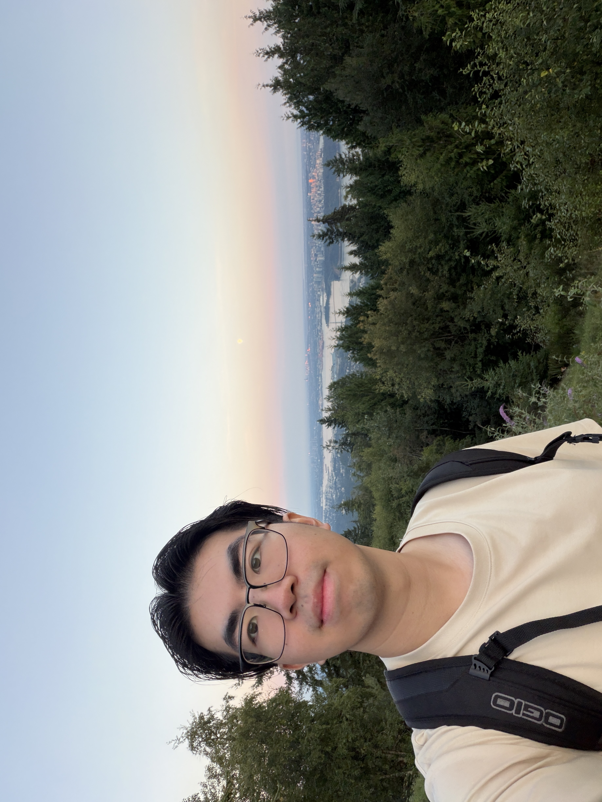

I enjoy building tangible products through analysis, prototyping and validation testing. My experience ranges from biomedical device fixtures and rail hardware to CFRP composites and machine-learning-driven materials testing.
Preview Resume
I work at the intersection of design and manufacturing. I haved worked in roles such as mechanical design, manufacturing engineering, and systems design for operations and maintenance. I'm drawn to problems that require both a spreadsheet and a pair of safety glasses to create concrete results on cutting-edge problems.
Bachelor of Applied Science, Mechanical Engineering
CGPA: 87%
GPA: 4.0
Exp. May 2027Coursework: NC Programming, Machine Design, Manufacturing Processes, Fluid Dynamics, Machine Learning.
Mechanical Manufacturing Engineering Intern
Kardium — Burnaby, BC
Teaching Assistant, Machine Design
UBC Mechanical Engineering — Vancouver, BC
Mechanical Engineering Intern
LB Foster — Burnaby, BC
Systems Engineer Student
AtkinsRéalis — Richmond, BC
Engineering Support Services Coordinator
Ledcor — Vancouver, BC
Manufacturing & CAM
Designed a custom high-volume production vacuum machining fixture and developed a 5-axis CNC manufacturing process a thin-walled aluminum MacBook keyboard chassis, optimizing workpiece support, machining operations, manufacturing time and part quality through toolpath simulation.
Developed CNC tool paths in Siemens NX, optimizing cutting parameters, tool selection, and machining sequences while accounting for 5-axis access and part stability.
Defined full CAM process including roughing and finishing toolpaths, tooling selection, and feed rates for a 5-axis HAAS UMC-style mill.
Delivered a fully documented NX package including fixture, tool assemblies, CAM operations, and machine-ready G-code while flagging design changes that removed non-machinable features.
Analysis & design — LB Foster
Designed custom mounting hardware for train-mounted friction management systems, validated against GM/RT 2100, BS 7608, and IEC 61373 using FEA for proof loading, fatigue, and modal analysis, then assessed further under random vibration and shock in CAE Fatigue.
Increased component fatigue life by 33% through simulation-driven design refinement, and deployed 9+ friction management systems into freight and transit service across North America and Asia.
Machine Design
Working within an 8-person team, helped design and analyze a chain-driven drivetrain for a 3 hp gas-powered drift trike, building Excel and Python tools to iterate operating conditions and select sprockets, shaft features, and tapered roller bearings from Timken catalogues.
Following component selection for the drivetrain and shaft, took the project from concept to a working prototype.
Machine Learning
Trained CNN and ANN regression models in Keras to predict the stiffness of FDM-printed gyroid beams directly from their sliced print-layer images or G-code, correlating results against 72 physical 3-point bending tests and using PCA to cut the feature set to 117 inputs.
Built models to estimate stiffness straight from an image or G-code file without physical testing and allowing faster iteration on future lattice designs, reaching R² values above 0.8.
Composites & fabrication — UBC ThunderBikes
Reverse-engineered motorcycle bodywork components using Photogrammetry in RealityCapture and Blender, reconstructed and surface-modelled the fairings, windshield, and gas tank for mold design, then fabricated the parts in carbon fibre and fibreglass with wet-layup and vacuum infusion.
Fabricated bodywork components while optimizing porosity and surface finish to support weight reduction and better aerodynamics.
Systems engineering
Designed a mock spacecraft to maximize dwell time across a 2D model of a planet's gravity while minimizing mass and cost, then built and competed with an Arduino-controlled two-stage launch vehicle with a spring-powered ball launcher as its secondary stage. Optimized timing and angle of launch using SolidWorks Motion Analysis and MSC ADAMS.
Delivered a top-scoring report among 20 teams, and the only one to complete the full two-stage launch on all three allowed attempts.